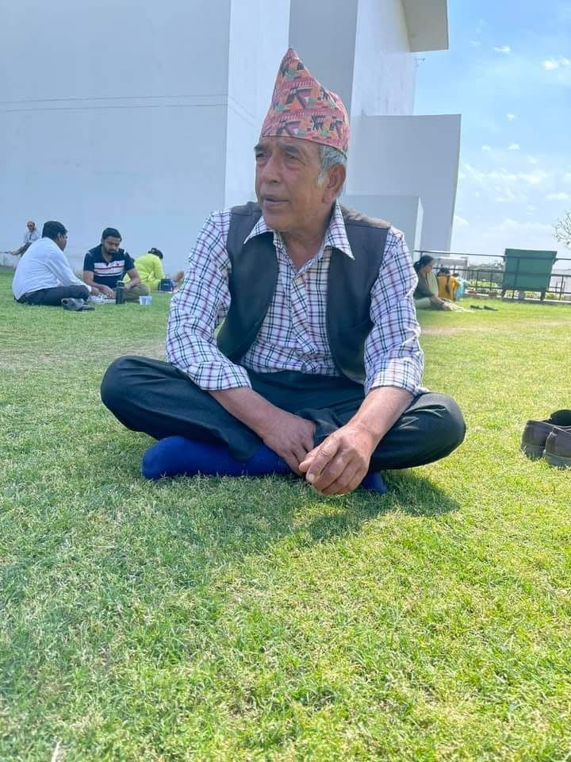
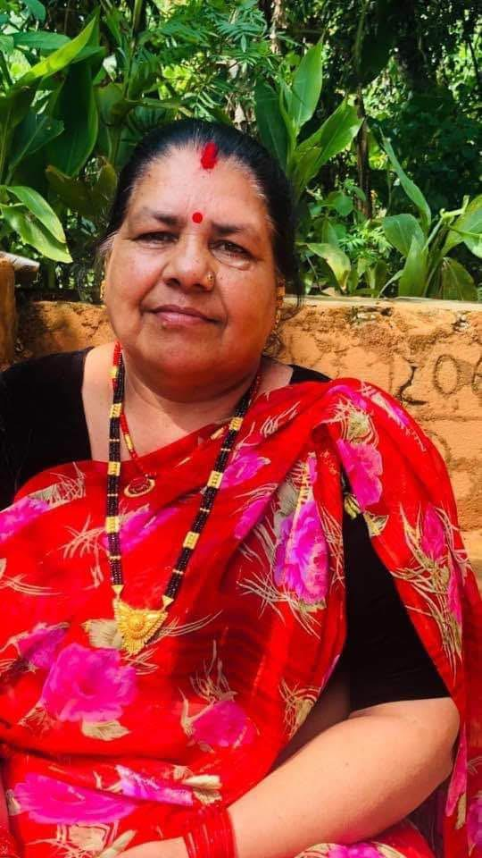
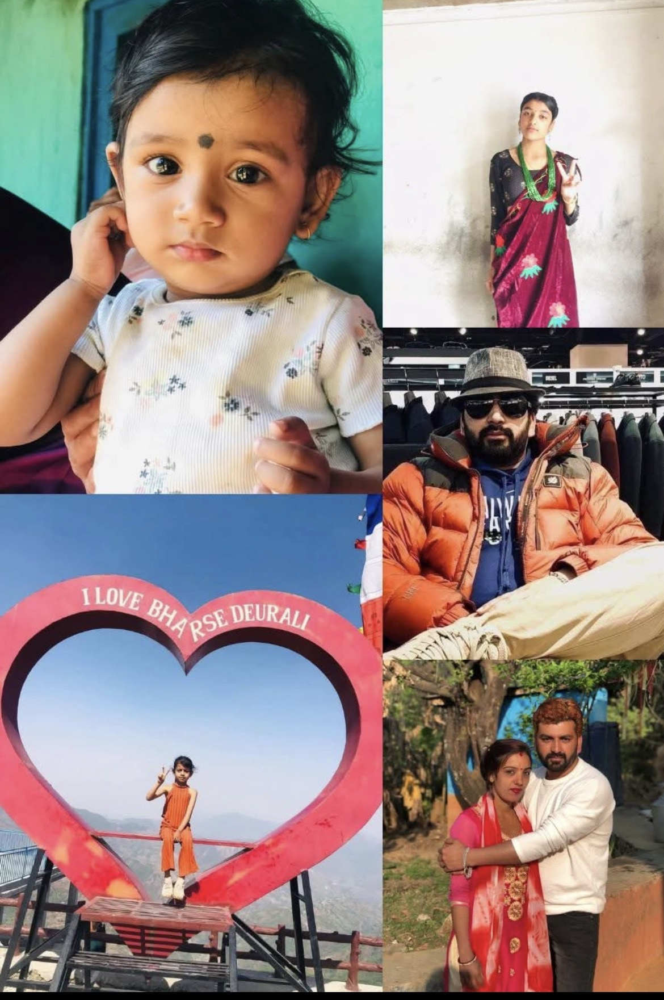
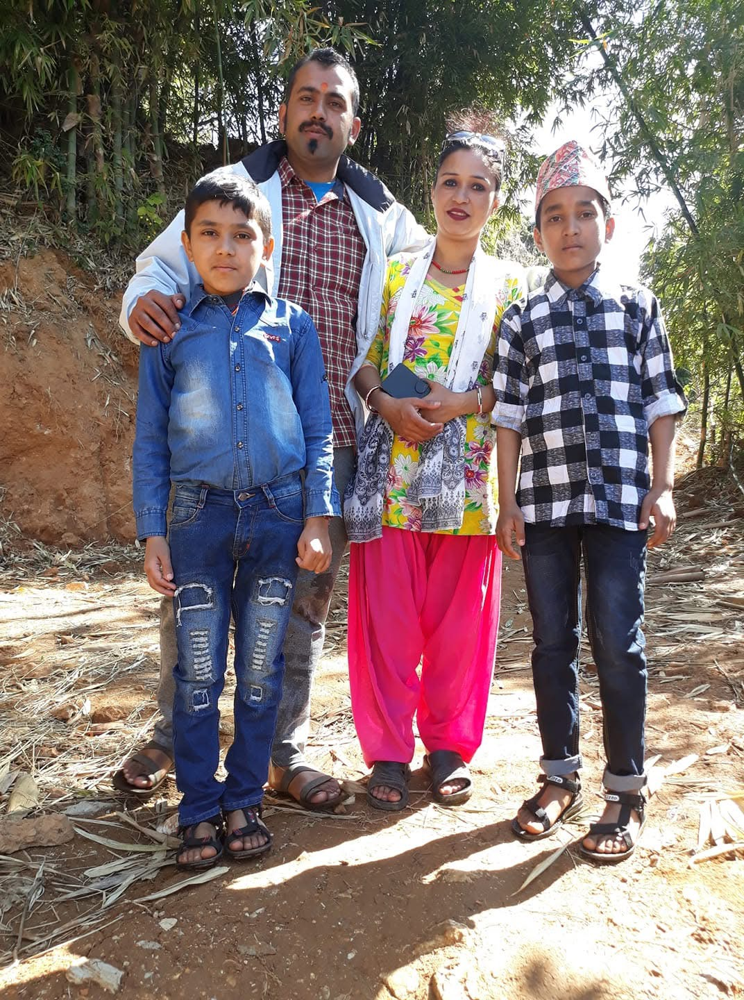
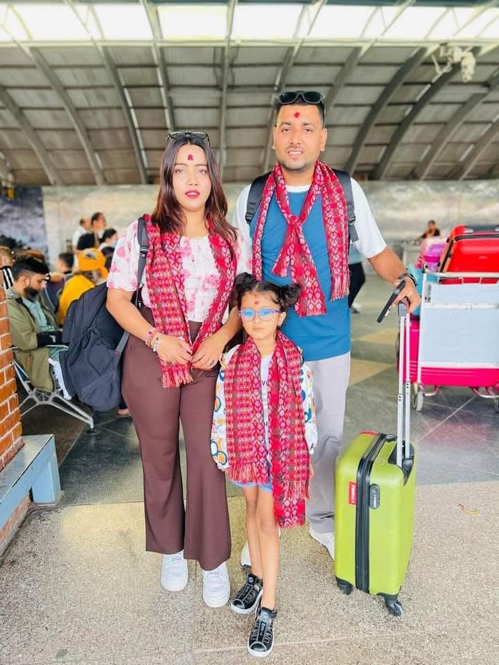

// Family
The People Behind My Story
Three generations, one family — rooted in Satyawati, Johang Khaireni, Gulmi.
// Family Tree
My Family

Hari Prasad Bhandari
Grandfather

Rewati Bhandari
Grandmother
In Loving Memory

Bharat Bhandari
Uncle
Spouse
Sita Bhandari
Children
Sajana Bhandari
Sandhya Bhandari
Saloni Bhandari
My Family

Kumar Bhandari
Father
In Loving Memory · Age 40
Spouse
Roma Pandey Bhandari
Children
Kunjan Bhandari
Kushal Bhandari
More about me 
Dipak Bhandari
Uncle
Spouse
Sabita Gyawali Bhandari
Daughter
Sedrina Bhandari
Unless noted otherwise, the family resides at Satyawati-6, Johang Khaireni, Gulmi. My uncle Dipak's family is based in Malta.